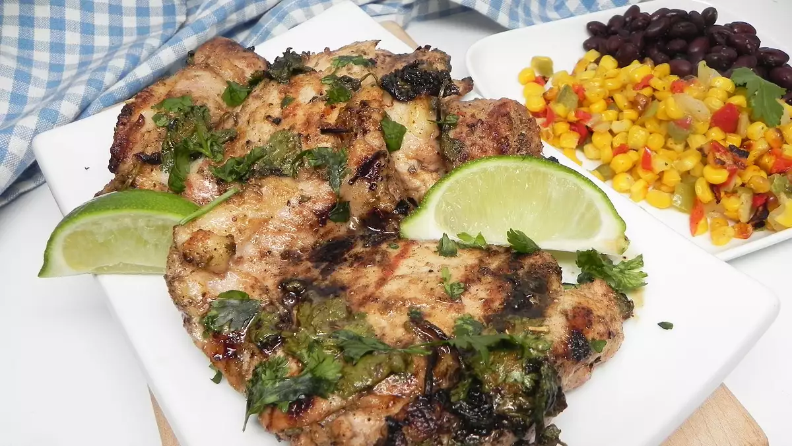

Grilled Cilantro-Lime Chicken Thighs

Description
All the flavor without the fuss, these chicken thighs come together in a flash. Serve with Mexican-style street corn and beans.
Ingredients
- ½ cup chopped fresh cilantro
- ¼ cup olive oil
- 2 tablespoons lime juice
- 1 teaspoon dried Mexican oregano
- salt and ground black pepper to taste
- 2 pounds boneless, skinless chicken thighs
- lime wedges for garnish
Steps
- Whisk cilantro, oil, lime juice, cumin, oregano, salt, and pepper together in a large bowl. Add thighs and stir to combine. Cover and refrigerate for 2 hours.
- Preheat an outdoor grill over medium-high heat and lightly oil the grate.
- Cook thighs for 6 minutes. Flip and cook until chicken is no longer pink in the center and the juices run clear, about 6 more minutes. An instant-read thermometer inserted into the center should read at least 165 degrees F (74 degrees C). Serve with lime wedges if desired.
Go to Homepage